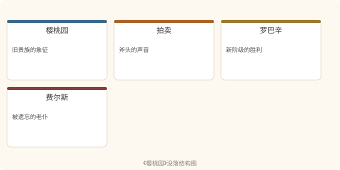

樱桃园
一、基本信息
| 作者 | 安东·契诃夫 |
|---|---|
| 成书/出版 | 1904年莫斯科首演（Britannica：premiered in Moscow January 17, 1904） Anton Chekhov — Encyclopaedia Britannica（百科全书） |
| 国别/地区 | 俄国 |
| 时代 | 近代 · 20世纪初 |
| 体裁 | 四幕喜剧（正剧之争） |
| 语言 | 俄语 |

《樱桃园》没落结构图（主题·结构图）
二、创作背景
Britannica（B270）：'In another great play, The Cherry Orchard (1904), Chekhov created a poignant picture of Russian landowners in decline'（俄国地主没落的辛酸图景）；首演六个月后作者死于肺疾（B270）。
文体之争（通说待核）：契诃夫称'喜剧'、斯坦尼斯拉夫斯基演成悲剧。
'契诃夫之枪'原则（B270：every element introduced in a story should be necessary to the plot）。
三、内容脉络
朗涅夫斯卡娅与樱桃园拍卖：伐木声与斧头（通说待核）。
罗巴辛买下樱桃园——'新生活'的开始（通说待核）。
四、主要人物表
| 人物 | 身份 | 说明 |
|---|---|---|
| 朗涅夫斯卡娅 | 女地主 | 挥霍的归来者（通说待核） |
| 罗巴辛 | 商人 | 买主（通说待核） |
| 费尔斯 | 老仆 | 被遗忘者（通说待核） |
五、主题与艺术特点
- 没落的辛酸图景（B270）。
- '喜剧'与'悲剧'的作者意图之争（通说待核）。
- '契诃夫之枪'（B270）。
六、影响与评论
- Britannica：'a poignant picture of Russian landowners in decline'（B270）。
Anton Chekhov — Encyclopaedia Britannica（百科全书） - 作者页：'契诃夫之枪'（B270）。
Anton Chekhov — Encyclopaedia Britannica（百科全书）
七、阅读建议
难点
- '契诃夫式'的停顿与潜台词。
- 1904—05俄国革命前夜。
- 《樱桃果园》（童道明译本？——通说待核）。
- 英文原版（公有领域）。
与《海鸥》《万尼亚舅舅》合读。
八、待核实
- 作者定名'喜剧'的说明核对。
- 朗涅夫斯卡娅/罗巴辛/费尔斯人名核对。
- 莫斯科艺术剧院演出细节待核。